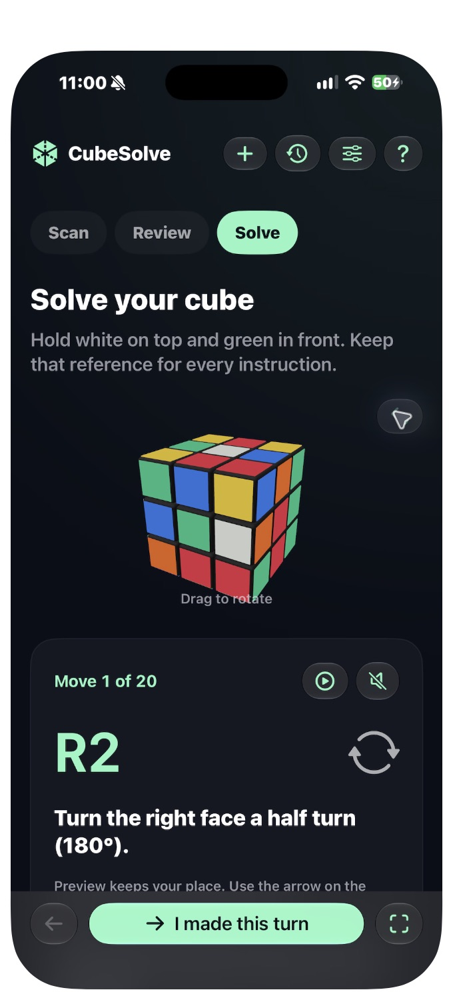
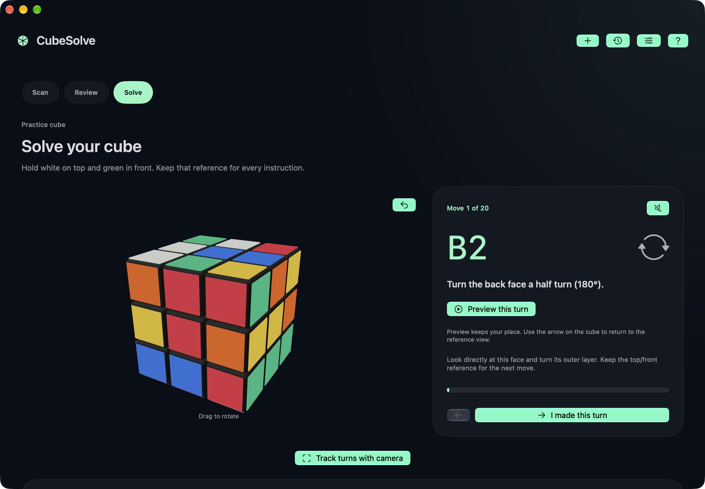
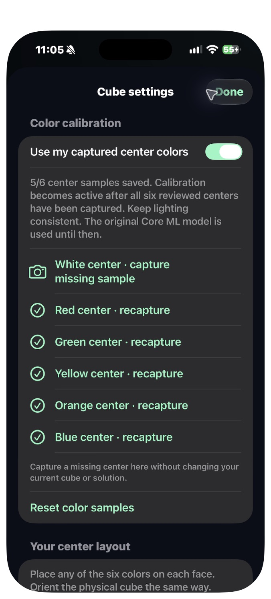

Scan six faces.
Automatic face detection finds the corners. Capture each face with the orientation labels as your guide.
For the cube in your hands.
A scrambled cube doesn’t need to stay a mystery. Scan six faces, check the colors, and follow a clear 3D guide at your own pace.
See how it worksiPhone, iPad & Mac · $4.99 USD one-time purchase at launch · App Store release in preparation

A simple rhythm
Every step gives you a chance to check, correct and continue.
Automatic face detection finds the corners. Capture each face with the orientation labels as your guide.
Check the suggested stickers. Personal calibration learns your six center colors; manual corrections keep you in control.
Preview the moving layer, read the instruction, then advance after making the physical turn. Backtracking is always available.
Room to see the whole solve
A native desktop layout pairs the cube with its next instruction. Drag to inspect, preview a layer, and keep the sequence close.
Saved solutions stay locally on each device. Cross-device history sync is not included.


A little variation is normal
Different cube palettes and lighting can change how stickers look. Capture the six center colors to calibrate, and recapture a missing sample without replacing your current solution.
Clear expectations. Better solves.
One photo cannot reveal hidden stickers: capture all six faces. Glare and difficult lighting may need a correction or retake. Solutions are replay-verified, not guaranteed shortest. The virtual cube shows a predicted state; it is not an AR overlay anchored to your physical cube.
Contact FreeRange Labs